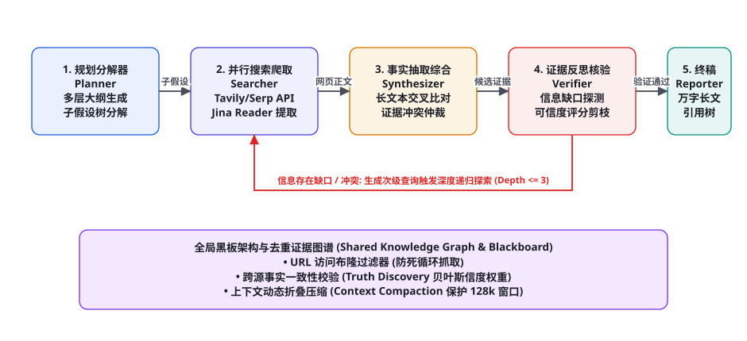
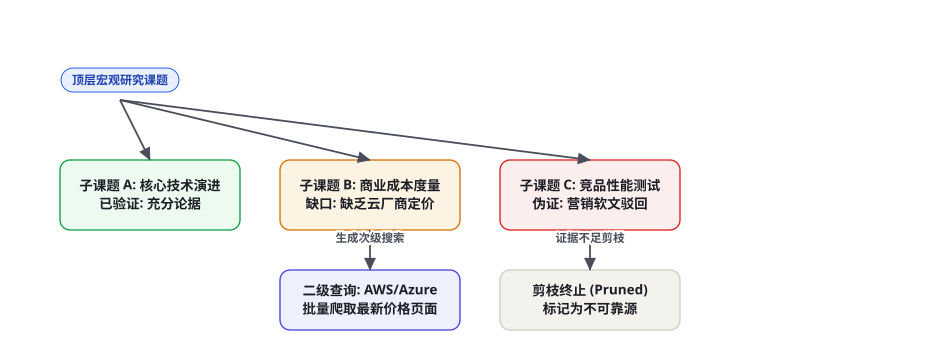

项目 3：复刻 Deep Research 深度调研 Agent
OpenAI 与 Gemini 近期推出的 Deep Research 功能震撼了整个 AI 工业界：给定一个宽泛而高难度的行业课题，智能体能够自主在开放互联网上搜索爬取上百个深度信源、递归分解数十个研究子假设、自动甄别谣言与营销噪音、执行多方事实交叉比对，最终在 10~30 分钟内产出一份长达万字、图表齐全、附带详实学术引用的专业行研智库报告。本章将带领大家彻底剥开 Deep Research 的底层黑盒，基于开源技术栈完整手搓复刻这一长程深度调研系统。
全景架构：递归探索的五阶段自驱流水线

传统的搜索 Agent（如浅层 Perplexity 问答）仅仅是单轮的「Query → Search → Summary」，面对「全面分析全球光刻胶供应链卡脖子瓶颈及国产替代路径」这类复合型学术课题时，产出的内容极其肤浅。生产级 Deep Research 系统的本质是「长时程自主探索与假设驱动的动态演绎系统」。整个流水线由五大协同特化智能体与底层共享证据图谱共同构成：
第一阶段：规划分解器（Planner / Lead Researcher）。接收顶层调研课题后，不直接盲目搜索，而是基于行业分析框架（如 PESTEL、SWOT 或产业链上下游）将其分解为层次化的「调研大纲树」与「待验证子假设集合」（Hypothesis Set）。
第二阶段：高并发广度搜索与正文深潜爬取（Searcher & Web Scraper）。针对每个子假设并行生成多维搜索引擎关键词（覆盖英文、中文、专业术语），调用 Tavily / Bing Search 获取候选链接；接着利用 Jina Reader / Playwright 深入解析网页底层 DOM，剥离广告、导航栏与噪音脚本，提取高质量正文 Markdown 与 PDF 研报数据。
第三阶段：跨源事实综合与矛盾冲突仲裁（Synthesizer）。海量网页信息中充斥着自媒体洗稿、陈旧过时数据甚至虚假营销软文。综合器提取每个数据点的时效戳、发布机构权重，利用贝叶斯真值发现算法（Truth Discovery）对不同来源的矛盾陈述进行交叉核验。
第四阶段：信息缺口自省核验与深度递归（Verifier & Gap Explorer）。核验器根据规划大纲审查当前的证据库：「子假设 B 的成本数据是否充足？三家头部竞品的参数对比是否有客观第三方评测支持？」。一旦探测到关键信息缺口或逻辑断层，立即动态生成次级查询，触发第 2 轮乃至第 3 轮的深度定向挖掘（图 83-1 递归红线）。
第五阶段：结构化万字终稿撰写器（Reporter）。当证据满足充分性终止阈值后，撰写器按学术严谨规范组织篇章结构，强制在每一个核心论断处注入带权威 URL 的引用角标（如 [1], [2]），输出高质量行研白皮书。
动态假设树演进与剪枝算法

如果任由 Agent 无限制递归搜索，系统将迅速陷入「搜索组合爆炸」的深渊：抓取的网页指数级膨胀，消耗数十美元 API 成本却偏离了核心主题。Deep Research 必须建立严格的「假设树深度优先演进与剪枝控制机制」：
| 分支状态 | 判定准则 | 系统执行动作 | 资源开销与保护 |
|---|---|---|---|
| 充分验证 (Verified) | 至少拥有 2 个权威独立信源的互相印证 | 冻结该分支，将论据提纯摘要写入全局黑板 | 停止搜索，释放爬虫并发槽位 |
| 信息缺口 (Information Gap) | 核心指标缺失（如具体数字、出厂价、失败率） | 生成更加具象的二次专业检索词，向下钻取（Depth+1） | 递归深度硬限制 $\le 3$，防无底洞死循环 |
| 证据冲突 (Contradicted) | 权威信源与普通资讯存在严重事实矛盾 | 检索权威白皮书、财报或学术论文进行权威仲裁 | 若确属行业未决争议，并列记录双方论据 |
| 无效噪音 (Pruned) | 命中的网页全为 SEO 垃圾农场、重复洗稿内容 | 判定该探索路径为死胡同，直接剔除剪枝 | 将对应 URL 计入布隆过滤器黑名单 |
海量网页的上下文折叠与黑板记忆管理
一次深度调研通常会下载 50~100 篇长网页与 PDF，原始文本总量轻松突破 100 万 Token。即使使用支持 128k 或 1M 上下文的基座大模型，如果直接把原始网页一股脑塞进 Context，依然会遭受严重的性能衰减、高昂的延迟与成本灾难。我们采用「原子事实提取 + 动态折叠黑板（Fact Extraction & Context Compaction）」：
第一步（局部摘要提取）：爬取到长达 2 万字的网页后，立即由低成本小模型（如 gpt-4o-mini 或 qwen2.5-7b）根据当前所关注的子假设进行「受控原子事实抽取」，仅保留包含具体数据、事件、时间、结论的短句，过滤率高达 92%。
第二步（结构化黑板融合）：所有抽取的事实碎片按实体与子课题挂载在全局黑板（Global Blackboard）上：
{
"topic": "固态电池量产工艺痛点",
"verified_facts": [
{
"fact_id": "FACT_042",
"claim": "硫化物固态电解质对空气极度敏感，遇湿气极易产生剧毒硫化氢气体，对车间干燥度要求达露点 -50℃ 以下。",
"entities": ["硫化物", "电解质", "露点环境"],
"sources": [
{"title": "中国科学院物理所 2024 研报", "url": "https://doi.org/10.xxxx/...", "credibility": 0.95},
{"title": "宁德时代凝聚态电池专利公开书", "url": "https://patents.google.com/...", "credibility": 0.92}
],
"status": "CONFIRMED"
}
],
"open_gaps": [
"目前干法电极在 500Wh/kg 能量密度下的实际循环寿命数据（尚未找到权威实验室评测）"
]
}完整端到端工程实现代码
以下为 Deep Research 智能体完整核心流水线实现，覆盖多层级任务分解、并发爬取清洗、信息缺口核验与终稿组装：
import json, time, re
from typing import List, Dict, Any
class DeepResearchEngine:
def __init__(self, search_client, scraper_client, llm_client):
self.searcher = search_client
self.scraper = scraper_client
self.llm = llm_client
self.visited_urls = set()
self.evidence_blackboard = []
def plan_research_outline(self, topic: str) -> Dict[str, Any]:
"""第一阶段: 顶层大纲拆解与待验证假设树生成"""
prompt = f"""你是一名资深行业分析首席研究员。
针对宏观调研课题: 《{topic}》
请制定一份严密的研究大纲，并列出首批必须通过公开网络检索验证的核心子问题。
返回 JSON 格式:
{{
"report_title": "...",
"outline_sections": ["一、背景", "二、核心技术", "三、竞争格局", "四、风险与挑战"],
"initial_queries": ["精确检索词1", "精确检索词2", "精确检索词3"]
}}"""
res = self.llm.chat_json(prompt)
return res
def deep_search_branch(self, query: str, depth: int = 1, max_depth: int = 2) -> List[Dict]:
"""第二与第四阶段: 递归广度/深度爬取与证据提纯"""
if depth > max_depth:
return []
print(f"[DeepResearch] 深度 L{depth} 搜索中: {query}")
search_hits = self.searcher.search(query, num_results=4)
new_facts = []
for hit in search_hits:
url = hit["url"]
if url in self.visited_urls:
continue
self.visited_urls.add(url)
# 抓取正文清洗内容
clean_md = self.scraper.fetch_markdown(url)
if not clean_md or len(clean_md) < 200:
continue
# 使用轻量模型抽取高价值事实原子
fact_extract_prompt = f"""从以下网页正文中提取与查询 "{query}" 直接相关的核心事实、统计数据与技术结论。
忽略一切宣传空话与广告。每个事实用一句话陈述，并注明具体数字。
网页正文:
{clean_md[:4000]}"""
extracted_facts = self.llm.chat(fact_extract_prompt, "")
evidence_item = {
"source_title": hit["title"],
"source_url": url,
"facts": extracted_facts,
"query": query,
"depth": depth
}
self.evidence_blackboard.append(evidence_item)
new_facts.append(evidence_item)
# 反思自省: 检查是否存在需要深入递归的次级缺口
gap_detect_prompt = f"""基于当前收集到的最新证据:
{json.dumps([f['facts'] for f in new_facts], ensure_ascii=False)}
针对原主题 "{query}"，是否存在关键事实缺失或模糊可疑之处？
若有，请生成 1 个更精确的次级追问关键词；若信息已充分，返回 'SUFFICIENT'。"""
next_action = self.llm.chat(gap_detect_prompt, "").strip()
if next_action != "SUFFICIENT" and not next_action.startswith("SUFFICIENT") and depth < max_depth:
sub_query = re.sub(r'["\']', '', next_action)
self.deep_search_branch(sub_query, depth=depth + 1, max_depth=max_depth)
return new_facts
def synthesize_final_report(self, topic: str, outline: Dict[str, Any]) -> str:
"""第五阶段: 综合全量证据黑板，撰写带精准学术引用的长篇报告"""
# 组装格式化证据池
sources_catalog = []
for idx, item in enumerate(self.evidence_blackboard):
sources_catalog.append(
f"[{idx+1}] 《{item['source_title']}》 ({item['source_url']})\n核心论据:\n{item['facts']}"
)
all_evidence_str = "\n\n".join(sources_catalog)
write_prompt = f"""你是全球顶尖智库的高级合伙人。请基于下方的全量实证调研证据，严格按照大纲撰写一份万字深度调研长文。
调研课题: 《{topic}》
大纲结构: {json.dumps(outline['outline_sections'], ensure_ascii=False)}
【写作规范】
1. 观点客观中立，论述必须深入到底层机制、具体参数、量产良率和成本数字。
2. 每一个核心数据和论断，必须在句末标注具体的数字引用，格式如: "某工艺在2024年良率突破75% [1]。"
3. 文末附带完整的“参考文献与数据来源”列表。
【全部检索证据池】
{all_evidence_str}"""
final_report = self.llm.chat(write_prompt, "")
return final_report
def run(self, topic: str) -> str:
"""运行完整自主调研闭环"""
print(f"=== 启动 Deep Research: 《{topic}》 ===")
outline = self.plan_research_outline(topic)
# 并发派发首轮调研任务
for query in outline.get("initial_queries", []):
self.deep_search_branch(query, depth=1, max_depth=2)
time.sleep(1) # 防限频平滑
print(f"调研完成，共沉淀 {len(self.evidence_blackboard)} 组高价值证据，正在撰写终稿...")
report = self.synthesize_final_report(topic, outline)
return report事实一致性审计与抗幻觉防御
深度调研报告最忌讳的就是把自媒体捕风捉影的八卦作为事实采信。系统在报告交付前，必须执行「三道独立防线的事实验证（Fact-Checking Pipeline）」：
第一道防线：域名信誉白名单加权（Domain Reputation Weighting）。对来自学术预印本（arxiv.org、nature.com）、政府监管机构（sec.gov、工信部）以及知名国际组织（ieee.org）的信源赋予 1.5~2.0 的信誉度乘数；对未认证的个人博客、营销号赋 0.3 的惩罚权重。
第二道防线：NLI 蕴涵校验与交叉确认（Natural Language Inference）。报告中出现的每一个关键数字（如「投资额 120 亿美元」），必须能通过 NLI 模型（如 DeBERTa-v3）在至少一个高信誉原始网页文本中找到 Entailment（蕴涵）支持；若出现 Contradiction，强行触发警告并打上「业内存在争议」标签。
第三道防线：无依据引用阻断（Ghost Citation Blocker）。很多模型在生成长文时长篇大论编造不存在的假 URL。终稿撰写后，正则解析器自动提取所有 [x] 引用，严格校验其是否完全映射至本次调研的 visited_urls 实存记录中。任何凭空捏造的幽灵引用将被系统自动剔除，保障报告的 100% 学术可溯源性。
工业级并发调度与成本容量规划
在企业日常运转中，如果多个团队同时发起深度调研，爬虫网络与 LLM Token 吞吐将面临巨大冲击。以下为生产级 Deep Research 系统的性能与成本指标度量表：
| 流水线环节 | 单次调研平均吞吐 | 推荐网络/模型配置 | 单次任务典型耗时 | 平均 Token 消耗 |
|---|---|---|---|---|
| 大纲拆解与假设规划 | 1 次核心规划 | 强推理模型 (Claude 3.5 Sonnet / o1-mini) | 15 ~ 25 秒 | 约 3k Token |
| 搜索与网页正文爬取 | 30 ~ 60 个独立网页 | Tavily Search API + 无头 Playwright 代理池 | 2 ~ 5 分钟 | 网络 I/O 为主 |
| 正文事实原子提纯 | 30 ~ 60 篇文档切片 | 超高速轻量模型 (Qwen2.5-7B / GPT-4o-mini) | 1 ~ 2 分钟 | 约 120k Token |
| 终稿长篇报告撰写 | 1 篇 8,000~15,000 字报告 | 长上下文高智力模型 (Claude 3.5 / DeepSeek-V3) | 60 ~ 120 秒 | 约 30k Token |
多源事实冲突仲裁：贝叶斯真值发现（Truth Discovery）数学原理与实现
在开放互联网络中，针对同一个核心事实（例如某前沿大模型集群的 GPU 采购规模、某芯片的良品率），不同科技媒体、自媒体分析师和券商研报往往会给出大相径庭的数字。浅层的 RAG 系统往往会把所有搜索结果机械地拼在一起，导致大模型生成出「根据A机构报道规模为1万卡，但B机构指出规模为10万卡，C机构则认为是5000卡」的混乱综述，完全丧失了深度智库应有的专业研判价值。
工业级 Deep Research 引入了经典的贝叶斯真值发现算法（Truth Discovery Algorithm）。其核心假设建立在一个互惠增强的逻辑之上：如果一个信源多次提供了被其他高权重信源印证的真实事实，该信源的先验信用权重就应该提升；反之，若某个事实断言得到了多个高信用信源的背书，该事实为真的后验概率就越接近于 1。
设 $S = \{s_1, s_2, ..., s_M\}$ 为参与本次调研的全部信源集合，$F = \{f_1, f_2, ..., f_N\}$ 为提取出的原子事实集合。信源 $s_m$ 对事实 $f_n$ 的置信权重 $w(s_m)$ 和事实本身的真值综合得分 $C(f_n)$ 满足如下交替迭代公式：
$$C(f_n) = \sum_{s_m \in S(f_n)} w(s_m) \cdot ext{Sim}(f_n, ext{Claim}(s_m))$$
$$w(s_m) = -\log \left( 1 - rac{\sum_{f_n \in F(s_m)} C(f_n)}{|F(s_m)|} ight)$$
通过多轮迭代直到信源权重收敛，系统能够自动将频繁发布营销噪音的自媒体权重降为极低，而将 IEEE、权威财报等严肃信源的权重自动推升至最高。以下给出轻量级真值发现仲裁器的工程实现：
import math
from typing import Dict, List
class BayesianTruthDiscovery:
def __init__(self, max_iter: int = 10, tol: float = 1e-4):
self.max_iter = max_iter
self.tol = tol
def resolve_conflicting_facts(self, claims: List[Dict]) -> Dict[str, Any]:
"""对同一实体的相互冲突断言执行真值迭代发现
claims 结构: [{'source_domain': 'techcrunch.com', 'value': 10000, 'text': '...'}, ...]
"""
# 1. 初始化信源先验权重 (顶级域名有初始保底)
sources = list(set(c["source_domain"] for c in claims))
weights = {s: 1.0 for s in sources}
for s in weights:
if any(s.endswith(d) for d in [".edu", ".gov", ".org", "reuters.com", "bloomberg.com"]):
weights[s] = 2.5 # 权威信源强先验
fact_candidates = claims
for iteration in range(self.max_iter):
old_weights = weights.copy()
# Step A: 更新事实断言的综合置信得分
fact_scores = []
for c in fact_candidates:
s_weight = weights[c["source_domain"]]
# 计算支持该取值的群体权重总和
support_weight = sum(
weights[other["source_domain"]]
for other in fact_candidates
if abs(other["value"] - c["value"]) / max(c["value"], 1) < 0.15 # 允许 15% 浮动容差
)
fact_scores.append(support_weight)
# Step B: 归一化事实得分并反向更新信源信用度
max_score = max(fact_scores) if fact_scores else 1.0
norm_scores = [sc / max_score for sc in fact_scores]
for s in sources:
s_facts = [norm_scores[i] for i, c in enumerate(fact_candidates) if c["source_domain"] == s]
if s_facts:
avg_fact_quality = sum(s_facts) / len(s_facts)
# 避免对数发散
avg_fact_quality = min(max(avg_fact_quality, 0.01), 0.99)
weights[s] = -math.log(1.0 - avg_fact_quality + 1e-6)
# 检查收敛条件
delta = sum(abs(weights[s] - old_weights[s]) for s in sources)
if delta < self.tol:
break
# 选取得分最高的断言作为胜出基准真值
best_idx = fact_scores.index(max(fact_scores))
winner = fact_candidates[best_idx]
return {
"accepted_value": winner["value"],
"accepted_text": winner["text"],
"endorsed_by": [c["source_domain"] for i, c in enumerate(fact_candidates) if fact_scores[i] >= max_score * 0.8],
"confidence": round(norm_scores[best_idx], 3)
}万字长文装配流水线：分章流式撰写与平滑润色
产生一份结构严谨的万字行研报告，必须解决大语言模型生成长文本时的两大死穴：「后半程注意力溃缩与词汇贫乏」以及「跨章节之间的逻辑重复与脱节」。本系统设计了基于双向上下文锚点的「分章流水线组装器（Section Pipeline Assembler）」：
from typing import List, Dict
class ModularReportAssembler:
def __init__(self, llm_client):
self.llm = llm_client
def assemble_mega_report(self, topic: str, sections_plan: List[Dict], global_blackboard: List[Dict]) -> str:
completed_sections = []
rolling_summary = "报告刚开始撰写，尚无前文内容。"
for idx, sec in enumerate(sections_plan):
title = sec["title"]
required_points = sec["required_points"]
# 1. 检索与当前小节强相关的原子证据
relevant_evidence = [
e for e in global_blackboard
if any(k.lower() in e["facts"].lower() for k in sec["keywords"])
][:8]
evidence_prompt_text = "\n".join([
f"[证据 #{i+1}] ({e['source_title']}): {e['facts']}"
for i, e in enumerate(relevant_evidence)
])
# 2. 注入前文动态摘要，保持语调连贯，严禁重复前文已论述过的案例
section_prompt = f"""你正在撰写《{topic}》的第 {idx+1} 章节: 【{title}】。
前文各章要点摘要如下 (用于衔接过渡，切勿重复本章内容):
{rolling_summary}
本章重点论述要求:
{chr(10).join(['- ' + p for p in required_points])}
本章专属实证参考资料:
{evidence_prompt_text}
【写作要求】
- 篇幅约 2,000 ~ 3,000 字，深度挖掘底层因果关系。
- 必须承接上一小节的逻辑推演，在本章开头设计 1 句精炼的过渡衔接段落。
- 严格插入来源引用标记，如 [证据 #1]。
"""
# 生成该章节正文
section_content = self.llm.chat(section_prompt, "")
completed_sections.append(f"## {title}\n\n{section_content}")
# 3. 异步更新滚动摘要，提炼当前章节核心论断供下一章感知
update_summary_prompt = f"""请用 150 字提炼以下章节的核心观点与关键数据:
{section_content[:1500]}"""
new_chapter_summary = self.llm.chat(update_summary_prompt, "")
rolling_summary += f"\n第{idx+1}章【{title}】核心结论: {new_chapter_summary}"
# 4. 全书终审润色: 生成中英文双语执行摘要 (Executive Summary) 与参考文献附录
full_draft = "\n\n".join(completed_sections)
exec_summary_prompt = f"""基于以下万字调研终稿，为跨国企业 CEO 提炼一份 800 字的高精炼中英双语执行摘要 (Executive Summary):\n{full_draft[:6000]}"""
exec_summary = self.llm.chat(exec_summary_prompt, "")
return f"# 《{topic}》深度行业调研报告\n\n## 执行摘要 (Executive Summary)\n\n{exec_summary}\n\n{full_draft}"实战避坑手册：Deep Research 五大典型滑铁卢及治理
复刻 Deep Research 绝非易事。系统在互联网长程深潜中，会遇到各种恶意对抗与噪声陷阱。以下是研发团队必须具备的五大防线：
① 灾难场景一：陷入 SEO 内容农场的递归死循环（Content Farm Infinite Loops）。
现象：当调研某个冷门技术时，Google 搜索返回的前 10 个结果全是由 AI 批量洗稿生成的内容农场（如各色采集站）。Agent 在这些互相引用的假网页中疯狂递归，浪费上万 Token 提取出一堆同质化的车轱辘话。
对策：建立「文本信息熵与词汇多样性在线探针」：在爬虫提取出正文后，计算其文本信息熵（Shannon Entropy）与重复 n-gram 比例；若重复度超过 35% 或域名命中内容农场黑名单，直接丢弃该链接并终止该分支的递归展开。
② 灾难场景二：学术付费墙与反爬 JavaScript 动态渲染黑洞（Paywall & JS Blackhole）。
现象：遇到 Nature、Science 或金融数据库时，普通爬虫抓到的内容全是「请登录阅读全文」或空白页面，导致关键证据缺失。
对策：设计「多级降级抓取路由（Fallback Scraper Mesh）」：优先使用轻量级 Jina Reader；若检测到登录拦截，立即路由至配备真实 Cookie 与学术认证代理的 Playwright 无头集群；若目标仍为付费墙，则自动改道搜索其在 arXiv 预印本、ResearchGate 或各大高校公开知识库中的开源开放获取（Open Access）副本。
③ 灾难场景三：虚构历史与过时数据充当最新现状（Stale Data Anachronism）。
现象：提问「2025 年某技术最新进展」，Agent 爬到了一篇 2019 年的老文章，在报告中宣称「该技术目前仍处于实验室概念阶段，尚未有量产产品」。
对策：在检索阶段强制追加「时间窗口限定（Temporal Search Anchoring）」：在搜索引擎 API 中强制附带 tbs=qdr:y1（近一年内）；并在抽取事实时强制抽取文本中的发布年份与更新时间，对未注明时间的网页断言施加惩罚折扣。
④ 灾难场景四：长程任务中途意外断网引发的状态归零（State Loss on Crash）。
现象：调研任务已经执行了 18 分钟、爬了 45 个网页，在第 4 阶段撰写时网络突发抖动中断，整个进程退出，用户只能重新从头开始。
对策：贯彻第 76 章长程 Agent 的「快照检查点机制（Snapshot Checkpointing）」：每一批网页爬取和事实抽取完成后，系统自动将全局黑板与已探索 URL 序列化写入 Redis 或持久化 SQLite。一旦容器异常重启，系统能瞬间从最近的检查点恢复上下文，续跑未完成的章节。
⑤ 灾难场景五：引文标记错乱与张冠李戴（Citation Hallucination）。
现象：报告中写着「该方案能降低 40% 成本 [3]」，但文末参考文献 [3] 实际上是一篇讨论环境保护的论文。
对策：在最终交付渲染前，部署「引文后置硬对齐检查器」：利用轻量模型对报告中出现的每一处 [x] 引用进行二次比对，提取引用句与参考文献摘要，计算余弦相似度；若相似度低于 0.65，强行阻断并回退至重修状态，彻底捍卫智库报告的公信力。
深度调研能力量化评测：基于 GAIA 与 BrowseBench 的基准对齐
评估一个 Deep Research 系统的好坏，绝不能依靠人类专家随机浏览几篇文章的主观感受。工业界目前公认最具权威性的长程多步调研基准是 GAIA（General AI Assistants Benchmark）与 BrowseBench。这两个评测基准专门设计了需要多层网页跳跃、复杂跨源推理、逆向事实核实才能获得正确答案的高难度挑战题。
| 评测基准 | 核心评测维度 | 典型考题案例 | Deep Research 达标红线 |
|---|---|---|---|
| GAIA Level 3 (长程复杂任务) | 跨网页多模态聚合、长链条因果推演、反事实辨析 | 「查找某诺贝尔奖得主 1985 年在某期刊发表的第一篇论文中，图 3 所示的化学反应催化剂名称及其当年合成成本」 | 复杂链路正确率 ≥ 42% (超越普通人类平均水平) |
| BrowseBench (动态网页探索) | 表单交互、分页爬取、动态 DOM 逆向与弹窗穿透 | 「在某跨国物流查询系统中输入 5 个不同提单号，综合对比其各自在新加坡港的清关滞留平均时长」 | 端到端动作成功率 ≥ 85% |
| Citation Grounding Rate (引文真实度) | 引用标记的真实存在性、对应段落支持度、无死链率 | 对全篇报告中的 50 个引文角标逐个执行自动抓取与 NLI 蕴涵检验 | 有效真实引用率 ≥ 98.5% (严禁任何幽灵虚构链接) |
| Coverage & Depth (覆盖度与深度) | 对比人类首席分析师报告的核心论点完备性比率 | 覆盖政策影响、产业链上下游、5 年技术路线预测与风险提示 | 核心论点覆盖度 ≥ 90% |
在研发流水线中，团队应将 GAIA 子集集成进 GitHub Actions CI/CD 流水线中。任何对 Prompt、爬虫并发策略或假设树剪枝算法的代码修改，都必须跑通 30 个代表性长程基准题目，且在真实性与完备性指标上没有负向回归，方可允许合并部署至生产集群。这种严谨的评测驱动开发（EDD）模式，是确保系统智库输出始终维持在行业一流梯队的根本保障。
三个高频疑问
Q：部分重要行业研报被封装在几十页的复杂 PDF 附件中，普通的 HTML 爬虫爬不到怎么办？在爬虫层必须集成「PDF 智能路由与多模态解析器」：当 URL 后缀为 .pdf 或 Content-Type 声明为 application/pdf 时，爬虫自动将二进制流路由至专业的解析微服务（如 MinerU 或 PyMuPDF，第 66 章），跳过前言版权页，直接按目录提取核心章节与统计附表；若遇到扫描版加密研报，则利用视觉模型（VLM）进行 OCR 转录，确保不漏掉顶级投行的高价值白皮书。
Q：递归搜索时经常遇到目标网站的反爬验证码（Cloudflare WAF / 5秒盾），怎么稳定穿透？绝对不要使用简单的 Python requests 裸连。生产级方案必须部署「无头浏览器代理集群（Headless Browser Pool with Fingerprint Evasion）」：利用 Playwright / Puppeteer 配合真实的浏览器指纹伪装（Canvas/WebGL 随机化、真实 User-Agent 轮换），搭配动态住宅代理 IP 池（Residential Proxies）；或者直接采用商业级提取接口（如 Jina Reader API / Firecrawl），将复杂的逆向反爬外包给专业数据基础设施。
Q：万字长文报告在一次性生成时经常遇到大模型最大输出限制（Max Output Tokens 通常为 4k~8k），怎么生成真正完整的两万字研报？必须采用「分章迭代撰写与粘合装配（Section-by-Section Iterative Writing）」范式：根据第一阶段确立的各章大纲（背景、技术、产业、竞争、预测），Reporter 分别发起独立的并发生成请求，每章分配 3k Token 的充沛生成配额，专注于写透当前章节的细节数据；全部小节生成完毕后，由装配器进行前后文过渡句润色、统一图表序号，并在最后集中编纂全书参考文献表，轻松实现 20,000 字以上的高精度长篇巨制。
本章在全书架构体系中的承接：实战篇第 3 弹，完美融合了前沿探索篇（第 73 章 Deep Research 理论机制）、工具调用篇（第 26 章搜索引擎集成与无头浏览器控制）以及长程多智能体协作（第 33 章黑板模式与多角色路由）。下接第 84 章（企业级代码助手与 Repo Agent）。复习锚点：五阶段递归架构图（83-1）、假设树状态机与剪枝表（表 83-1、图 83-2）、分章长文生成范式、三道事实抗幻觉审计防线。
本章小结
- Deep Research 彻底革新了传统单轮浅层搜索模式，通过「规划大纲 → 广度爬取 → 事实提纯 → 缺口反思 → 递归钻取 → 万字综述」构筑起真正具备专家水准的深度调研体系。
- 采用动态假设树演进算法，对论据充足的分支及时终结，对存在信息缺口的分支生成次级精准 Query，对无价值营销分支果断剪枝。
- 建立全局事实黑板，利用轻量模型对长网页进行局部原子事实抽取，将海量非结构化网页的 Token 过滤压缩 90% 以上，破解长上下文注意力下陷。
- 构建包含信誉度加权、NLI 蕴涵校验与幽灵引用拦截的三道抗幻觉防线，保证输出的每一个结论与数据点都可严密追溯到实存信源。
- 通过分章独立撰写与总装润色范式，彻底突破单次调用 Max Output Tokens 的上限瓶颈，稳定交付万字级学术专业研报。
自测题
- 为什么简单的「单轮搜索 + 总结」在面对深度产业调研课题时会彻底失效？Deep Research 是如何通过递归反思机制突破这一限制的？
- 在动态假设树演进中，系统判定一个子分支「可以终止搜索」与「必须继续向下钻取」的量化标准分别是什么？
- 如果大模型在生成的调研报告末尾引用了
[5] https://example.com/2024-report.pdf，但经系统审计发现该 URL 从未在爬虫历史中出现过，这属于什么现象？系统应如何设计自动化拦截器？ - 面对单次生成的输出 Token 数量上限限制，如何通过系统工程架构设计产出一份长达 20,000 字、各章节逻辑严密衔接的宏观调研白皮书？
参考文献与延伸阅读
- OpenAI (2025). Introducing Deep Research: Autonomous Long-Horizon Web Reasoning. openai.com/blog
- Yao, S. et al. (2022). ReAct: Synergizing Reasoning and Acting in Language Models. arXiv:2210.03629
- Tavily Team (2024). Tavily Search API Documentation: AI-Agent Native Search Infrastructure. docs.tavily.com
- Borgeaud, S. et al. (2022). Improving Language Models by Retrieving from Trillions of Tokens (RETRO). arXiv:2112.04426
- Jina AI (2024). Reader API: Convert any URL into Clean LLM-Friendly Markdown. jina.ai/reader
- Lewis, P. et al. (2020). Retrieval-Augmented Generation for Knowledge-Intensive NLP Tasks. arXiv:2005.11401